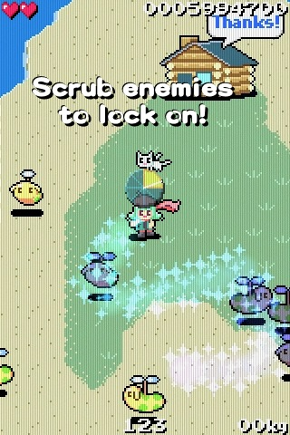
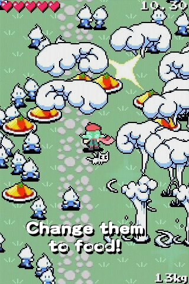
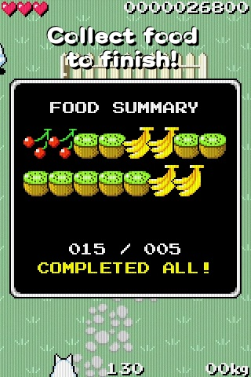
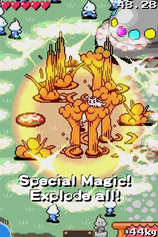
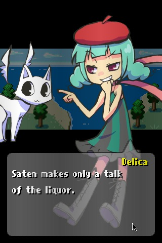

☆ GAME SYSTEM
|

|
Scrub from Delica(Player Character) over the enemies, then they will be locked by the magical shining!
The locked enemies become blue and freezed, lock'em all!
When the magic timer goes around, the magic spell will end. Lock enemies and activate the magic before the timer ends!
|
|

|
Release the finger had been traced, to activate the magic!
Shining blew up, it would change them at the near to food more and more!
Explode everything. It's very nice feeling!
|
|

|
Collect food in a hurry! If you are calmly, the food will disapper soon.
Collect a lot, bring them to the house. Brought the specified number of food, then the mission will be cleared!
Combo score is added more and more by pick up food continuous, But the time count is zero, score will not be added any more...
|
|

|
If you have more than 20 food, can use the special magic!
Tap the screen with two fingers, or tap the number is written on the bottom right corner, then the special magic will beat them around!
But they beaten by the special magic, does not change to food. Use it after thinking carefully.
|
|

|
The story mode has a lot of talking scene! It's longer talk more than the previous game. Because two characters can talk each other!
There are full of crappy content in 100 missions. Watch out because it's really crappy.
|
In addition, also exists Time Attack Mode!
And exits the secret items,
Get'em with unlock the achievements of the game center!
And, and,
exists the secret character!
Please play this game a long time! Ehehe!
|
☆ SPEC

Supported Models：
iPhone, iPod touch, iPad
OS：iOS4.3 or higher
4 Control Methods：
Tap the target point,
Relative virtual pad,
Fixed virtual pad,
Acceleration
Game Center：
Achievements
Leaderboards
Supported Periferals：
iCade
Joypad(App)
Character Design / Illustrations
Hanikura
|